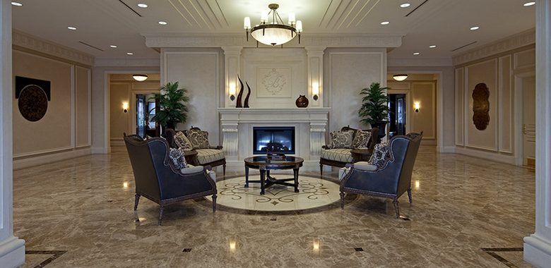

Мозаика и панно

Технология
Панно из камня — изысканное оригинальное украшение для внутреннего и внешнего оформления помещений (полы, стены, поверхность в бассейнах). Декоративная мозаика представляет собой скомпонованное на плоскости или рельефной поверхности изображение, состоящее из разноцветных камней — смальты, керамики и других материалов.
Элементы прямоугольной или квадратной формы изготавливаются на многодисковом станке. Гидроабразивная резка используется для создания фигурной мозаики любой степени сложности. Готовое к компоновке изделие поставляется на специальной сетке или бумаге.
Услуги
Наша компания предоставляет свои услуги в изготовлении мозаик, панно, декоров.
Мы можем осуществить монтаж всей изготовленной у нас продукции.